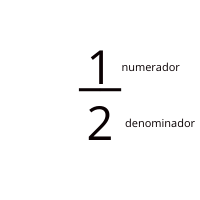

fracciones
resumen general
¿Qué son las fracciones?
Las fracciones son divisiones entre dos números enteros y sirven para representar números con decimales, las fracciones se componen de dos partes y hay diversas formas de representar números con decimales en forma de fracción esta y mas informacion la encontraras en este archivo
partes de una fracción:
las fracciones se componen de dos partes el denominador que es el número de abajo y representa la cantidad de partes en las que vamos dividir el entero y el numerador que es el número que está arriba y representa la cantidad de partes de la fracción que nos vamos a quedar.

nombres de las fracciones:
las fracciones se denominan primero escribiendo el nombre del número que está en el numerador ya sea uno,dos, tres… y después va el nombre de la fracción que está determinado por el valor del denominador. nombres:
.png)
a partir del 11 podemos escribir los nombres de los números en el denominador pero agregandole “avo” o “avos” al final por ejemplo
.png)
representación gráfica:
podemos representar gráficamente las fracciones dibujando figuras geométricas, dividiéndolas en la cantidad de segmentos iguales que indique el denominador y pintando la cantidad de segmentos que indique el numerador
por ej:
podemos representar graficamente
1/2
de la siguiente manera: En esta imagen se puede ver como el rectángulo fue dividido en dos partes iguales y se marcó una de sus partes. si quisiéramos representar
2/3
solo tendriamos que dividir el rectángulo en tres partes iguales y pintar dos y así con todas las fracciones pasaje de decimal a fraccion:
como vimos anteriormente las fracciones se usan para representar números con decimales por lo que podemos escribir un decimal como fracción y una fracción como decimal, para poder escribir un decimal como fracción antes tenemos que saber que tipo decimal es, hay tres tipos de decimales: el decimal exacto, periodico y el periodico mixto cada uno se escribe como de fracción de diferentes formas:
simplificación:
simplificar una fracción consiste en dividir tanto el numerador como el denominador por un divisor común de ambos por ejemplo en 5/10 podemos dividir el numerador por 5 y de igual forma dividimos el denominador por 5 y nos quedaria asi 5 : 5/10 : 5 = 1/2 una vez que ya no podamos dividir ambas partes por un mismo número se termina la simplificación, no siempre los resultados darán 1/1 de hecho lo que buscamos es acortar la fracción lo mas que se pueda y no obtener un resultado especifico.
más ejemplos:
.png)
multiplicación de fracciones:
para multiplicar dos fracciones basta con multiplicar el numerador de una fracción con el numerador de la otra y el denominador de una fracción con el denominador de la otra
.png)
división de fracciones:
para dividir dos fracciones utilizamos el mismo método dividimos el numerador de una fracción con el numerador de la otra y el denominador de una fracción con el denominador de la otra
.png)
suma de fracciones:
sumar fracciones es un poco más complejo que multiplicarlas o dividirlas para empezar debemos multiplicar el denominador de ambas fracciones y escribirlo en el denominador del resultado, lo siguiente es multiplicar el numerador de la primera fracción con el denominador de la segunda fracción y escribirlo en el numerador del resultado, luego multiplicamos el numerador de la segunda fracción con el denominador de la primer fracción y sumarlo al resultado que escribimos en el denominador del resultado de la siguiente manera:
.png)
resta de fracciones:
para restar las fracciones hacemos lo mismo, multiplicamos el denominador de ambas fracciones y lo escribimos en el denominador del resultado, lo siguiente es multiplicar el numerador de la primera fracción con el denominador de la segunda fracción y escribirlo en el numerador del resultado, luego multiplicamos el numerador de la segunda fracción con el denominador de la primer fracción y lo restamos al resultado que escribimos en el denominador del resultado de la siguiente manera:
.png)